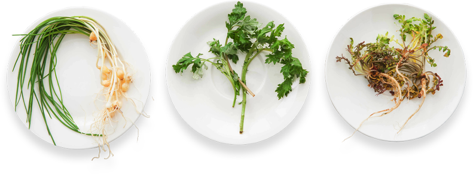
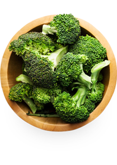
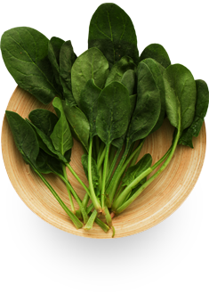
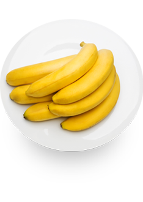

올가 홀푸드는
What we are이웃사랑과 생명존중의 정신에 뿌리를 둡니다.
이웃사랑 정신이란 자연 그대로 신선하고 안전한 먹거리를 드리겠다는 마음가짐으로
사람과 사람과의, 그리고 ORGA와 고객간의 아름답고 굳센 약속입니다.
생명존중 정신은 생명의 근원인 자연을 사랑하고 살리는 것으로,
작은 생명도 마음놓고 살 수 있는 환경을 가꾸어 나가겠다는 사람과 자연과의 약속입니다.
What we do
올가가 하는 일
우리는 바른 먹거리를 통해 이 정신을 실천합니다.
올가홀푸드는 친환경적 윤리와 철학에 기반한 엄격한 상품취급원칙과 안전점검프로세스 등
다양한 제도를 통해 고객들에게 바른 먹거리를 드리기 위해 노력합니다.
우리는 고객들의 LOHAS삶을 실현시켜드리기 위한 믿음직한 동반자로 튼실하게 성장하고 있습니다.
Vegetables & Fruits
Grains & Daily
Meat & Seafood
orga home meal & bread
- 
- 
- 
- discover
- discover
- discover
- discover
올가는 내 고장에서 제철에 생산된 친환경 재배 식품을 우선 취급하며, 전통 토속 식품과 희귀 식품을 보호합니다.
올가는 유해한 화학첨가물을 사용하여 가공한 식품과 유전자 변형 농산물은 취급하지 않습니다.
올가는 취급하는 모든 식품의 생산 이력을 관리하여 안전성을 강화합니다.
vegetables
친환경 채소1) 모든 친환경 농산물의 잔류농약검사 실시생산자와 생산이력이 투명한 친환경인증[유기농, 전환기유기농, 무농약] 채소를 판매하며, 올가는 친환경농산물에 대하여 KLOLAS인증기관인 풀무원기술연구소를 통해 분석기기인 GC와 HPLC를 사용하여 100종 이상의 잔류농약에 대하여 전수검사를 실시하고 있습니다.
*KOLAS-한국교정시험기관인정기구2) 콜드체인 시스템을 통한 신선도 유지가장 신선한 상태에서 수확하기 위하여 새벽 수확을 고집하며 산지에서 매장까지 최적의 온도를 유지하는 콜드 체인 시스템을 통해 영양소의 파괴가 적고 본래의 신선한 상태를 유지합니다.
vegetables
친환경 채소1) 모든 친환경 농산물의 잔류농약검사 실시생산자와 생산이력이 투명한 친환경인증[유기농, 전환기유기농, 무농약] 채소를 판매하며, 올가는 친환경농산물에 대하여 KLOLAS인증기관인 풀무원기술연구소를 통해 분석기기인 GC와 HPLC를 사용하여 100종 이상의 잔류농약에 대하여 전수검사를 실시하고 있습니다.
*KOLAS-한국교정시험기관인정기구2) 콜드체인 시스템을 통한 신선도 유지가장 신선한 상태에서 수확하기 위하여 새벽 수확을 고집하며 산지에서 매장까지 최적의 온도를 유지하는 콜드 체인 시스템을 통해 영양소의 파괴가 적고 본래의 신선한 상태를 유지합니다.
fruits
친환경 과일1) [유기농·무농약·저농약] 친환경 인증 과일농약과 화학비료는 물론 수확 후 저장,유통단계에서 뿌려지는 화학물질(Post-harvest chemicals)로부터 안전한 친환경농산물 인증 과일이므로 껍질채 안심하고 먹을 수 있습니다.2) 당도와 풍미, 식감이 좋은 완숙 과일덜 숙성된 과일을 유통과정에서 후숙시키거나, 발색제 등의 화학처리를 한 과일은 판매하지 않습니다. 완전하게 잘 익어 맛과 영양이 최상의 상태인 과일만을 판매합니다.
fruits
친환경 과일1) [유기농·무농약·저농약] 친환경 인증 과일농약과 화학비료는 물론 수확 후 저장,유통단계에서 뿌려지는 화학물질(Post-harvest chemicals)로부터 안전한 친환경농산물 인증 과일이므로 껍질채 안심하고 먹을 수 있습니다.2) 당도와 풍미, 식감이 좋은 완숙 과일덜 숙성된 과일을 유통과정에서 후숙시키거나, 발색제 등의 화학처리를 한 과일은 판매하지 않습니다. 완전하게 잘 익어 맛과 영양이 최상의 상태인 과일만을 판매합니다.
grains
친환경 곡식1) [유기농·무농약]쌀과 잡곡우수한 품종의 유기농·무농약 인증 쌀과 잡곡으로 재배에서 보관, 도정, 관리에 이르기까지 올가의 엄격한 품질관리원칙을 준수하여 낱알이 윤기있고 고르며 향미가 풍부합니다.
grains
친환경 곡식1) [유기농·무농약]쌀과 잡곡우수한 품종의 유기농·무농약 인증 쌀과 잡곡으로 재배에서 보관, 도정, 관리에 이르기까지 올가의 엄격한 품질관리원칙을 준수하여 낱알이 윤기있고 고르며 향미가 풍부합니다.
daily
일배식품1) [MSG(L-글루타민산나트륨), 합성착색료, 합성보존료] 3無첨가 원칙성장기 어린이들도 안심하고 먹을 수 있도록 MSG(L-글루타민산 나트륨), 합성착색료, 합성보존료를 일체 사용하지 않습니다.2) 유통기한 및 선도관리 철저일배 냉장제품은 생산부터 판매까지 모든 유통과정을 COLD CHAIN SYSTEM으로 관리하여 가장 신선한 상태를 유지하고, 일배식품 중 두부, 콩나물 등 고도의 신선도를 요하는 신선식품은 내부 유통기한 관리 기준에 의해 상품별로 지정된 잔여유통기한 이내의 상품만을 출고하여 선도를 관리합니다.
daily
일배식품1) [MSG(L-글루타민산나트륨), 합성착색료, 합성보존료] 3無첨가 원칙성장기 어린이들도 안심하고 먹을 수 있도록 MSG(L-글루타민산 나트륨), 합성착색료, 합성보존료를 일체 사용하지 않습니다.2) 유통기한 및 선도관리 철저일배 냉장제품은 생산부터 판매까지 모든 유통과정을 COLD CHAIN SYSTEM으로 관리하여 가장 신선한 상태를 유지하고, 일배식품 중 두부, 콩나물 등 고도의 신선도를 요하는 신선식품은 내부 유통기한 관리 기준에 의해 상품별로 지정된 잔여유통기한 이내의 상품만을 출고하여 선도를 관리합니다.
meat
정육1) 동물복지 환경에서 사육된 한우와 국내산 돈육정기적 DNA 검사를 통하여 한우임을 검증하고, 올가동물복지기준(ORGA Animal Welfare)조건에서 사육한 1등급 이상의 소고기와 법적 기준에 적합한 넉넉한 공간에서 사육한 국내산 돈육을 취급하고 있습니다.2) 無항생제·無성장호르몬의 식물성 사료합성방부제, 항생제, 합성착색료 그리고 성장촉진제 등의 첨가물 사용이 엄격히 제한된 맞춤형 주문사료로 키워 영양도 좋고, 이러한 첨가물로 인하여 동물의 체내에 축적되는 독성 물질로부터 안전합니다.
meat
정육3) 사육에서 가공까지 철저한 위생관리농림부로부터 식품위해요소중점관리기준(HACCP) 인증을 받은 위생적인 도축장을 이용하고, 최소의 미생물 관리와 적정 온도의 유지를 통해 우수한 품질을 유지합니다.4) 농림부 주관 쇠고기이력추적시스템 도입농림부에서 주관하는 한우이력추적시스템을 도입하여, 올가에서 구입한 쇠고기는 해당 개체의 원산지, 사육지, 소의 종류, 동급 등의 모든 이력을 확인할 수 있습니다.5) 올가동물복지 기준에 적합하게 방사조건에서 사육된 유정란
seafood
수산1) 국내 연근해 청정해역의 자연산 선어국내산·자연산 선어를 원칙으로 합니다. 자연산이 불가능한 어종과 어패류에 한해 양식상품을 허용하되, 항생제와 항균제 및 성장촉진제를 사용하지 않은 상품을 선별취급하니다.2) 원산지 확인·급속냉동·철저한 위생관리 냉동생선원산지가 분명한 생선만을 선별하고, 어획에서 동결까지 식품위해요소 중점관리기준(HACCP)인증 및 그에 준하는 위생원칙을 준수합니다.3) 수산자원의 보호노력LMOs(유전자변형생물체)와 포획금지체장 어종 그리고 금어기의 수산자원은 철저히 제한함으로써 수산자원의 보호에 앞장섭니다.
seafood
수산1) 국내 연근해 청정해역의 자연산 선어국내산·자연산 선어를 원칙으로 합니다. 자연산이 불가능한 어종과 어패류에 한해 양식상품을 허용하되, 항생제와 항균제 및 성장촉진제를 사용하지 않은 상품을 선별취급하니다.2) 원산지 확인·급속냉동·철저한 위생관리 냉동생선원산지가 분명한 생선만을 선별하고, 어획에서 동결까지 식품위해요소 중점관리기준(HACCP)인증 및 그에 준하는 위생원칙을 준수합니다.3) 수산자원의 보호노력LMOs(유전자변형생물체)와 포획금지체장 어종 그리고 금어기의 수산자원은 철저히 제한함으로써 수산자원의 보호에 앞장섭니다.
orga process
올가의 안전점검 프로세스
올가는 5,000여 가지의 다양한 상품을 취급하고 있으며 상품 안정성에 대해 엄격한 관리를 하고 있습니다.
-
- 안전한 농산물의 공급을 위해 모든 농산물에 대해
245종의 농약성분 정밀분석을 실시하여 부적합
농산물을 사전에 차단하고 있으며 금년 내 검사
항목을 320종으로 확대할 예정입니다.
- 안전한 농산물의 공급을 위해 모든 농산물에 대해
-
- 친환경 농산물의 안전성 확보를 위해 직거래 산지농가에 대한
정기점검을 실시하고 친환경 재배현황 및 환경 등을 확인하고
있습니다. 정직하게 친환경 작물을 재배하는 생산자들을 발굴,
육성하여 고객에게 안전한 친환경 농산물을 공급하고 우수 생산자
와는 상생/발전할 수 있는 올가 마이스터 제도를 시행하고 있습
니다.
- 친환경 농산물의 안전성 확보를 위해 직거래 산지농가에 대한
-
- 2005년부터 누적된 생산자별 잔류농약 분석데이터를
기초로 거래 농가를 엄격히 선정하고 있으며 취급 농산
물에 대해 수시로 기준 적합성 여부를 검증하여, 부적합
판정 시 영구 취급 금지 조치를 내리는 1 OUT 제도를
운영하고 있습니다.
- 2005년부터 누적된 생산자별 잔류농약 분석데이터를
ORGA 마이스터(Miester)
올가 마이스터는 투철한 장인정신 아래 품질이 우수한 유기농산물을 생산·공급해온 사람들로
올가는 엄격한 평가기준에 의해 10개 품목의 명장을 선정하였습니다.
친환경 농산물 중에서도 최상급의 상품에만 ORGA 마이스터의 명예가 허락됩니다.
-
ORGA MIESTER
LOCAL, GREENS, EGGS
윤동현 생산자
-
ORGA MIESTER
LOCAL, GREENS, EGGS
이상철 생산자
-
ORGA MIESTER
LOCAL, GREENS, EGGS
최혁진 생산자